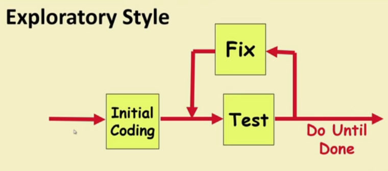
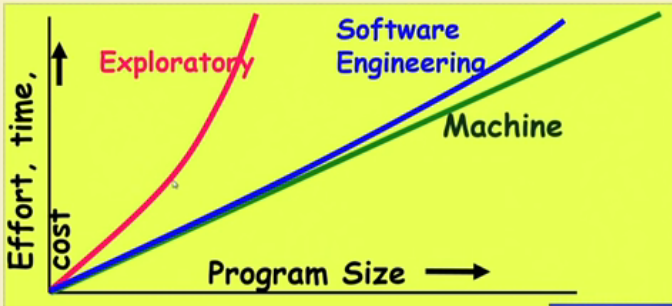
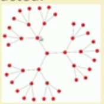

Exploratory Style
Que : What is exploratory software Development?
Ans : Early programmers used exploratory (also called build and fix) style.
- A ‘dirty’ program is quickly developed.
- The bugs are fixed as and when they are noticed.
- Similar to how a junior develops programs...

Que : What is wrong with the exploratory Style?
Ans : Can successfully be used for developing only very small(toy) programs but if we increase the program size then effort cost and time increases exponentially. This method even breaks/fails after certain size.

Beside the exponential growth of effort,cost and time with proble size:
- Exploratory style usually results in unmaintainable code.
- It becomes very difficult to use the exploratory style in team development environments.
~~~~~~~~~~~~~~~~~~~~~~~~~~~~~~~~~
Software engineering principles extensively use techniques specifically targeted to overcome the human cognitive limitations.
Two important principles are
- Abstraction Focus attention on only one aspect of the problem and ignore other aspects and irrelevant details. Also called model building.
Simplifying a problem by omitting unnecessary details.
For complex problems:
- A single level of abstraction is inadequate.
- A hierarchy of abstractions may have to be constructed.

- Decomposition :
It decomposes a problem into many small independent parts.
The small parts are then taken up one by one and solved separately.
The idea is that each small part would be easy to grasp and therefore can be easily solved.
The full problem is solved when all the parts are solved.
The decomposed parts must be more or less independent of each other.
Ex: The capters of book.